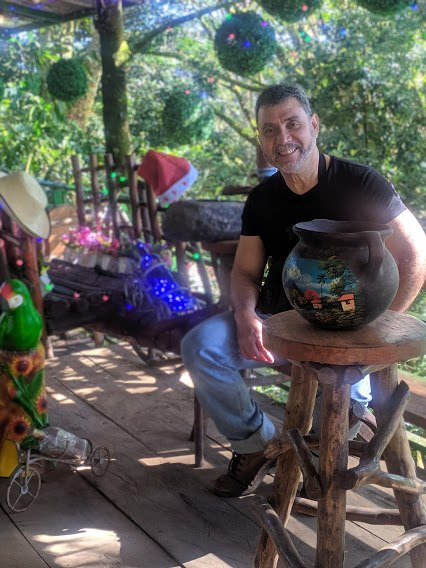

Poesía de Nelson Rivera


Mi nombre es Nelson René Rivera Vides, de nacionalidad centroamericana,
nacido específicamente en El Salvador en el año de 1959. Descubrí hace
unos cuantos años, específicamente en el año 2014 que me gustaba
escribir. En esa época comencé a hacer mis primeros escritos, en ese
momento no contaba con una buena formación en el ámbito de la ortografía
y de la gramática de nuestro lenguaje, muchos menos en el área
literaria. Mas sin embargo, como decimos por aquí, “me tiré al pozo”;
como hacemos casi todos los que comenzamos nuestra aventura literaria en
el ciberespacio. Y comencé a publicar mis primeros escritos, a los
cuales yo llamaba poemas, en una de las redes sociales.
Luego de un tiempo, me di cuenta de la necesidad de mejorar mis conocimientos en todo lo referente al lenguaje: gramática, ortografía, redacción, poesía, etc. Y comencé a estudiar de manera autodidacta y hasta la fecha continúo haciéndolo. Como pueden darse cuenta en esta página he intentado escribir poesía tanto en prosa como en verso, he incursionado el mundo de los relatos y me aventuré a escribir un par de novelas. Sin duda, escribir y programar son dos cosas que disfruto hacer. Y doy gracias por haber tenido la oportunidad de lograrlo.
Luego de un tiempo, me di cuenta de la necesidad de mejorar mis conocimientos en todo lo referente al lenguaje: gramática, ortografía, redacción, poesía, etc. Y comencé a estudiar de manera autodidacta y hasta la fecha continúo haciéndolo. Como pueden darse cuenta en esta página he intentado escribir poesía tanto en prosa como en verso, he incursionado el mundo de los relatos y me aventuré a escribir un par de novelas. Sin duda, escribir y programar son dos cosas que disfruto hacer. Y doy gracias por haber tenido la oportunidad de lograrlo.